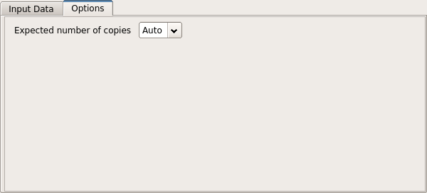

The Automated Molecular Replacement (MR) task is designed to deal with relatively straight forward MR cases. It runs the MrBUMP pipeline and performs the following steps:
- Search for suitable homologues using a sequence-based search (Phmmer)
- Preparation of the MR search models using the Sculptor program to process the found homologues
- Molecular replacement using the search models in the Phaser program
- Refinement of the MR solution using Refmac5 to assess the likelihood of success
Input

The input to the program should be the AU content containing the expected sequences, the experimental reflection details (F, SIGF) and the Free R set (1) There is a Select chains option on the Crystal content icon menu that gives you the option to select/deselect the sequences to be input to MrBump.
The user can select the number of monomers to search for or allow the program to calculate this automatically (2)
Options
Options will appear here shortly

The output of the program comprises of the sequence-based search results and the results of molecular replacement and refinement. The first section details the search results. It lists the known PDB chains and their alignment to the target sequence. The MR results section gives a table of results for each of the search models in molecular replacement. The results include the Phaser LLG and TFZ scores, the refinement R values (R/Rfree) and the SHELXE correlation coefficient (CC) between the c-alpha trace and the experimental data. Note that SHELXE is only used where the data is 2.4 Angstroms or better.
When the job has completed the user has the following options:
- Perform further refinement of the molecular replacememt solution model
- Carry out automated model building into the map resulting from molecular replacement
- Proceed to Interactive model building in Coot
Has molecular repalcement worked?

The user should view the model in Coot as a first step when the program finishes. Checking the quality of the correlation between the electron density and the positioned molecular replacement search model by eye is one of the best ways to assess whether or not the molecular replacement solution is correct. Look also at the difference map density. Positive difference map may indicate parts of the target structure that are missing in the search model e.g. side chains, missing residues at the termini and missing component molecules of the target structure.